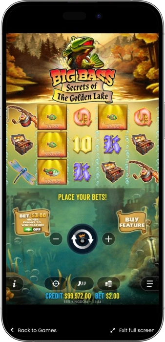
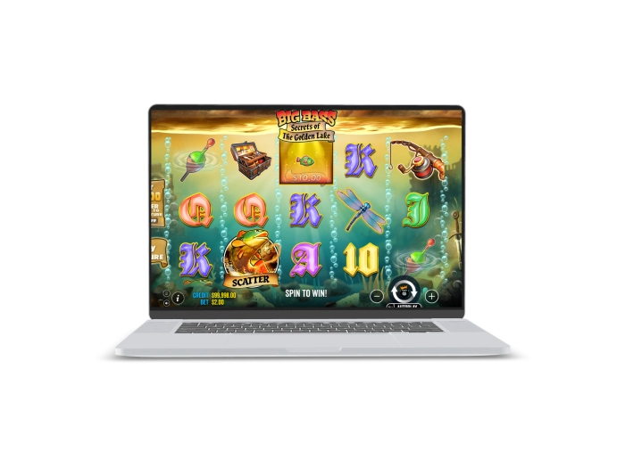

Exclusive welcome offer of
Exclusive welcome bonus of
Big Bass Secrets of the Golden Lake — Up to 5,000x, 20 Free Spins and Golden Lake Bonus
Top Casinos
Bonus Details
Casino
Bonuses
Rate
Free Spins
More Info
Get
Advantages
-
Two bonus modes with distinct pacing.
-
Up to 5,000x win potential overall.
-
Familiar Big Bass collector-style bonus rhythm.
-
Golden Lake adds extra reel interventions.
-
High volatility suits bigger swing hunters.
-
Up to 20 free spins triggered.
-
Multipliers grow steadily as collectors accumulate.
Big Bass Secrets of the Golden Lake App



About Big Bass Secrets of the Golden Lake
Big Bass Secrets of the Golden Lake is a vivid Pragmatic Play slot that expands the familiar Big Bass fishing formula with a mysterious golden-lake setting.
The game uses a 5x3 layout with 10 fixed paylines and leans into high volatility, so the biggest expectations usually revolve around the bonus rounds. Its defining feature is the presence of two free spins paths: the regular Free Spins mode and the separate Golden Lake Free Spins mode.

In both features, the Fisherman symbol acts as the core collector by gathering money values from fish symbols and helping the bonus grow stronger over time. The progress meter makes every fourth collected Fisherman especially important because it can award extra spins and a stronger multiplier. This slot is a strong match for players who enjoy the Big Bass style of play, collector mechanics, and the chase for larger bonus-driven wins.
Big Bass Secrets of the Golden Lake — slot review and features
Big Bass Secrets of the Golden Lake — Key Slot Characteristics
Big Bass Secrets of the Golden Lake combines the familiar Big Bass formula with a more adventurous presentation built around a mysterious golden lake. The game follows a high-volatility model, which means the base game sets the pace while the strongest potential is concentrated inside the bonus rounds. It is easy to follow on both desktop and mobile screens, and it feels especially rewarding for players who enjoy progression-based features. The overall structure is simple to learn, yet the bonus potential gives the slot real depth.
Technical Profile
- • Provider: Pragmatic Play
- • Layout: 5 reels, 3 rows
- • Paylines: 10 fixed paylines
- • Volatility: High
- • RTP: 96.07% in the default configuration
- • Max win: up to 5,000x the bet
Core Features
- • Two free spins modes: standard Free Spins and Golden Lake Free Spins
- • Fisherman collector mechanic with progressive bonus levels
- • Multipliers that grow as more collectors are gathered
- • Up to 20 free spins on the initial trigger
- • Optional Ante Bet and Bonus Buy where permitted
- • Fully optimized for desktop, tablet, and mobile play
Big Bass Secrets of the Golden Lake — Where You Can Play
Big Bass Secrets of the Golden Lake is typically available on licensed online gaming platforms that feature slot titles from major software providers. In most cases, the game can be launched both in a standard browser version and in a mobile-friendly format without complicated installation. Players usually find it either through the main slots section or by searching for the title directly. Many platforms also provide a demo version, which makes it easier to explore the mechanics before switching to real play. The best overall experience usually comes from platforms with stable performance, clear navigation, and transparent game information.
Big Bass Secrets of the Golden Lake — Demo Mode
The demo mode in Big Bass Secrets of the Golden Lake is a practical way to learn the slot without using real money. It allows players to see how the free spins are triggered, how the Fisherman meter progresses, and how Golden Lake Free Spins differ from the standard bonus mode. This is especially useful before moving to real stakes because the slot is high volatility and rewards a clear understanding of its bonus structure. Demo play also helps players settle into the rhythm of a game built around less frequent but potentially stronger bonus outcomes.
Big Bass Secrets of the Golden Lake — Payout Table
This payout table gives a clear overview of the most important symbols in Big Bass Secrets of the Golden Lake. It helps players quickly identify which symbols carry stronger line-win potential and which icons matter most once the bonus action begins.
| Symbol | Payouts | Notes |
|---|---|---|
| Float | 3 = 0.5x; 4 = 5x; 5 = 200x | Highest-paying regular symbol |
| Dragonfly | 3 = 3x; 4 = 15x; 5 = 100x | Strong premium payout symbol |
| Fishing Rod | 3 = 2x; 4 = 10x; 5 = 50x | Mid-tier premium symbol |
| Tackle Box | 3 = 2x; 4 = 10x; 5 = 50x | Matches the rod in value |
| Fish | 3 = 1x; 4 = 5x; 5 = 20x | Basic themed pay symbol |
| A / K | 3 = 0.2x; 4 = 2.5x; 5 = 10x | Higher card-value symbols |
| Q / J / 10 | 3 = 0.2x; 4 = 1x; 5 = 5x | Lower card-value symbols |
| Fisherman Wild | Substitutes for regular symbols | Collects money fish during bonus play |
| Money Fish | From 2x up to 5,000x | Most important symbol in bonus rounds |
Big Bass Secrets of the Golden Lake — How to Win Based on Real Play Experience
There is no guaranteed way to win in Big Bass Secrets of the Golden Lake because the slot is driven by random outcomes, but real play experience points to one clear pattern: most of the real potential comes from the bonus features rather than from the base game alone. One of the biggest mistakes is expecting line wins to consistently carry a long session, because in practice this slot tends to reveal its strength through Free Spins or Golden Lake Free Spins. Players who manage the game better usually accept the high volatility from the start, choose a comfortable stake, and avoid forcing results by suddenly raising their bet size. A strong practical approach is to understand the Fisherman meter in detail, because every fourth collector can add more free spins and push the bonus multiplier to a better level. Golden Lake Free Spins also tend to feel more explosive thanks to special reel interventions that can create stronger collection moments. The best long-term experience usually comes from disciplined play, realistic expectations, and treating the bonus round as the slot’s true engine.
Software Providers
Big Bass Secrets of the Golden Lake — bonuses, features, and how to play
Big Bass Secrets of the Golden Lake — Bonuses and Special Features
Big Bass Secrets of the Golden Lake is built around its bonus content, and that is exactly what gives the slot its strongest identity. The base game mainly acts as a route into larger feature moments, while the real momentum begins once the scatter trigger leads into one of the two free spins paths. A major strength of the game is that it does not rely on only one standard feature, because players can access either regular Free Spins or the more eventful Golden Lake Free Spins mode. In both cases, the Fisherman Wild is essential because it collects money-fish values and pushes the bonus meter toward stronger multiplier stages. The optional Ante Bet and Bonus Buy functions also make the game feel more aggressive where those options are allowed. Overall, this slot is especially attractive to players who value layered bonus mechanics over simple line-win action.
Standard Free Spins
- • 3 scatters usually award 10 free spins, 4 scatters award 15, and 5 scatters award 20. This is the classic bonus mode where Money Fish and Fisherman Wild symbols work together to create the main collection wins.
Golden Lake Free Spins
- • This is the rarer and more exciting bonus path, unlocked through the card-pick stage after the scatter trigger. It starts with 10 free spins and uses a special reel set built around blanks, Money Fish, and Fisherman Wilds.
Fisherman Meter and Multiplier Growth
- • Every 4th collected Fisherman Wild moves the bonus to the next level. A typical progression is x1 at the start, then +10 spins and x2 after 4 collectors, +10 spins and x3 after 8 collectors, and +10 spins with x10 after 12 collectors.
Money Fish Values
- • Money Fish symbols can carry values from 2x up to 5,000x the bet. Their real strength appears when they are collected by a Fisherman Wild during the bonus rounds, especially when several high-value fish land together.
Golden Lake Random Enhancements
- • Golden Lake Free Spins can improve weak setups with extra reel events. For example, the game may add Money Fish when a Fisherman lands alone, pull in a Fisherman when only fish are visible, or transform blank spaces into useful symbols.
Ante Bet
- • Ante Bet usually increases the total stake by 50% in exchange for a better chance of reaching the scatter trigger. For example, a 1.00 bet becomes 1.50 when Ante Bet is enabled.
Bonus Buy
- • Where available, Bonus Buy lets players enter the feature directly. Standard Free Spins may cost around 100x the bet, while direct Golden Lake Free Spins may be priced around 270x the bet.
Big Bass Secrets of the Golden Lake — Free Spins and Multipliers Table
This table shows how the free spins structure and multiplier progression work in Big Bass Secrets of the Golden Lake. It is especially useful for understanding how the bonus becomes stronger as more Fisherman Wild symbols are collected.
| Trigger / Level | Free Spins | Multiplier |
|---|---|---|
| 3 Scatters | 10 | x1 |
| 4 Scatters | 15 | x1 |
| 5 Scatters | 20 | x1 |
| Golden Lake Start | 10 | x1 |
| 4 Fisherman Wilds Collected | +10 | x2 |
| 8 Fisherman Wilds Collected | +10 | x3 |
| 12 Fisherman Wilds Collected | +10 | x10 |
Big Bass Secrets of the Golden Lake — How to Play
Big Bass Secrets of the Golden Lake is easy to enter even for a newer player because the base structure is clear from the first few spins. The first step is choosing a comfortable bet size and then watching for scatter symbols that open the door to the slot’s bonus modes. The main goal is not only to collect regular line wins, but to reach the free spins and get the most out of the Fisherman collector mechanic.
Step-by-Step Play Guide
- • Choose a bet size that fits your bankroll and your preferred pace, especially because this is a high-volatility slot.
- • Start the base game and follow the 10 fixed paylines for standard symbol combinations and regular wins.
- • Watch for 3, 4, or 5 scatters, as these trigger the bonus entry and increase the starting free spins in the standard mode.
- • Complete the card-pick stage, which can lead either to regular Free Spins or to Golden Lake Free Spins.
- • Focus on the Fisherman Wild during the bonus because it collects the Money Fish values and unlocks the real payout potential.
- • Track the progression meter carefully, since every 4th collected Fisherman adds more free spins and improves the multiplier level.
- • Use Ante Bet or Bonus Buy only with a clear plan, because both options increase the cost of chasing the feature.
Big Bass Secrets of the Golden Lake — Playing Tips
Big Bass Secrets of the Golden Lake works best when treated as a slot built around less frequent but stronger moments rather than constant small returns. That is why a smart approach matters more than emotion, and disciplined play often shapes the session more than short-term randomness. The better a player understands where the real potential sits, the smoother and more enjoyable the overall experience becomes.
Helpful Tips
- • Play with the bonus round in mind, because the slot’s strongest value usually comes from free spins and collected Money Fish.
- • Choose a moderate bet size, since high volatility can create long stretches before the next meaningful feature appears.
- • Learn the slot in demo mode first so you can recognize how standard Free Spins and Golden Lake Free Spins behave.
- • Do not overuse Ante Bet, because it may improve bonus access but it also increases the rate at which your balance is spent.
- • Keep your betting rhythm stable instead of reacting emotionally to short dry spells or sudden wins.
- • Respect Golden Lake Free Spins as a high-value opportunity, but avoid treating it as a guaranteed outcome every session.
Big Bass Secrets of the Golden Lake — Mistakes That Drain the Bankroll
In Big Bass Secrets of the Golden Lake, the bankroll usually disappears not because of one bad spin, but because of a chain of poor decisions over time. This slot can go through longer quieter stretches before a strong bonus appears, which makes emotional play especially risky. The faster a player starts fighting the volatility, the more likely it becomes that the balance runs out before the next real opportunity arrives.
Common Bankroll Mistakes
- • Starting with a bet size that is too high, which reduces session length and makes it harder to survive until a meaningful bonus round appears.
- • Chasing losses by suddenly increasing the stake after a bad run, a move that usually speeds up the bankroll decline instead of fixing it.
- • Leaving Ante Bet on all the time, even though it raises the effective spin cost by 50% and can burn through the balance much faster.
- • Buying bonuses too often without a strict limit, especially the more expensive Golden Lake feature where several weak outcomes can hit in a row.
- • Misunderstanding the role of the Fisherman Wild, because Money Fish values only become truly powerful when they are actually collected.
- • Playing without a time limit or bankroll cap, which often leads to chaotic decisions and weaker control in a high-volatility slot.
Frequently Asked Questions
Its biggest difference is the two-path bonus structure, including Golden Lake Free Spins, plus a more mystical treasure-focused atmosphere.
In practice, the bonus mode matters more because that is where the Money Fish collection mechanic and multiplier growth become most important.
That kind of spin usually falls short of its full value because the main collector is missing. In Golden Lake Free Spins, special rescue-style reel effects may still improve the setup.
It uses fixed paylines, so the overall structure remains steady from one spin to the next.